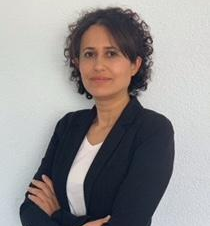

Yasemin Özbayrak

Summary
I am an experienced administrative manager with organizational skills and legal knowledge. My strengths lie in my quick comprehension and
Problem-solving skills. It's easy for me to incorporate challenging areas of responsibility.
Education
- Bachelor of Arts, Public Management - Ankara University (1994-1998)
Work Experience
Projektmitarbeiterin im Staatsministerium
October 1998 - March 1999
Orta Asya Ülkeleri ile Türkiye iliskilerinin iyilestirilmesi hk
Kauffrau im Büromanagement als Beamtin beim Kartellamt
Jun 1999 - October 2009
Büromanager als Beamtin beim Kartellamt
November 2009 - July 2016
Verwaltungsmitarbeiter der Sprachschule
December 2022 - Present
Skills
- Management: ⭐️⭐️⭐️⭐️⭐️
- Office Programms (Teams, Word, Excel, Outlook, PowerPoint):⭐️⭐️⭐️⭐️⭐️
- Organizational Skills:⭐️⭐️⭐️⭐️⭐️
Certifications
- Deutsche Sprache C1 Certificate
- EDV Certificate
Other